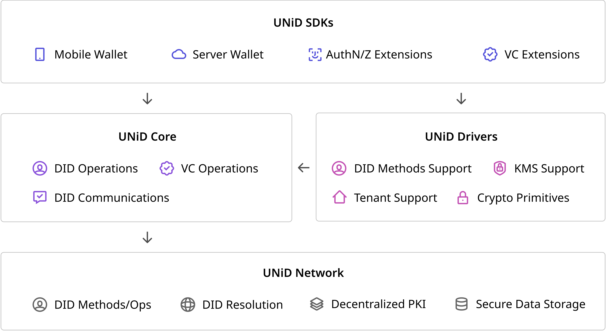
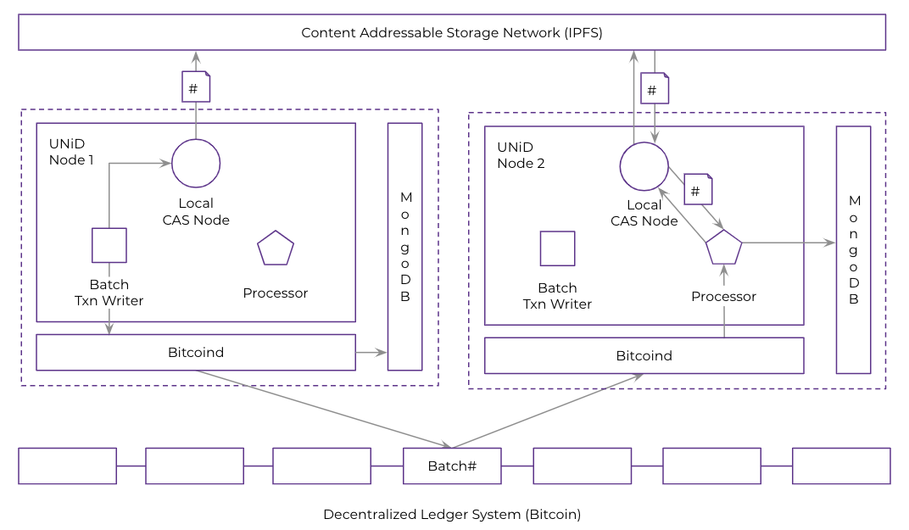

UNiD Platform
Intro to UNiD Platform
UNiD platform provides fundermental capabilities of DID operations, VC operations, and DID communications in a secure and privacy-preserving manner. UNiD implementation is composed of a collection of microservices, allowing developers to combine pluggable and extensible modular for flexibility and freedom of choice without compromising security.
As in the diagram below, our platform consists of three components: UNiD SDKs and Extensions, UNiD Core APIs, and UNiD Drivers on the top of UNiD Network.

UNiD Network is built on the top of Sidetree that is a 2nd layer blockchain-agnostic protocol and has multiple reference implementations for various decentralized ledger systems, such as Bitcoin, Ethereum, etc.
UNiD Drivers pre-configured integrations to our platform that support fundermental capabilities. UNiD Core are designed as a set of APIs for communicating with UNiD network and drivers and used through UNiD SDKs to easily incorporate these capabilities into your application.
UNiD Core
UNiD Core consists of a set of modules and APIs that support core functions such as DID operations, VC operations, and DID communications. UNiD SDKs and extension tools are built on the top of it. Click here for more info
UNiD Drivers
The UNiD Drivers are pre-configured integrations to our platform that support DID methods, key management, crypto primitives, and tenant model. The drivers are pluggable for preventing vendor lock-in and enabling users choices without compromising security. Click here for more info
UNiD SDKs
The UNiD SDKs offer convenient and easy-to-access application logic to build solutions and integrate with digital services that exist out of our platform. UNiD extension tools support the features such as DID AuthN and VC Data Schema that are strongly dependent on each use case and are outside scope of UNiD Core and Drivers. Click here for more info
UNiD Network
UNiD network consists of primary components of a DID overlay network:
- The underlying ledger system that serves as the global anchoring and linear sequencing system for DID operations.
- The nodes in below figure, which inteact with the ledger system to anchor operations, fetch and replicate data from the CAS network, and process operations in accordance with the protocol deterministic rule set.
- An integrated CAS network layer the nodes use to distribute and replicate DID operation files.

If you want to see how to operate and resolve DIDs on UNiD network, please click here for more info.
UNiD network also serves a SDS (Secure Data Storage) storing encrypted verifiable credentials and presentations in a secure and privacy-preserving manner. UNiD SDS has authentication mechanisms to verify all requests with DID signature and pre-configured tenant token and authorization mechanisms to grant access to third parties.